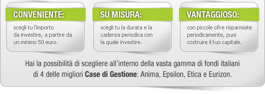

|
||
|  | ||
| Entra in Webank e vai su Investimenti > Fondi&Sicav > Soluzioni fai da te > Ricerca veloce per scegliere il fondo. Per informazioni e richieste clicca qui oppure scopri come fare. | ||
| Cosa aspetti? Pensa al tuo futuro: investi con metodo, investi con Webank. | ||
|
Un saluto cordiale e a presto. Il team di Webank |
||
| Messaggio promozionale. Per informazioni sui servizi di investimento offerti dalla Banca e sulle caratteristiche e i rischi degli strumenti finanziari prendere visione dell'Informativa preliminare MiFID e dei prospetti informativi disponibili sul sito webank.it. Il piano di accumulo può essere sospeso o estinto in qualunque momento. |